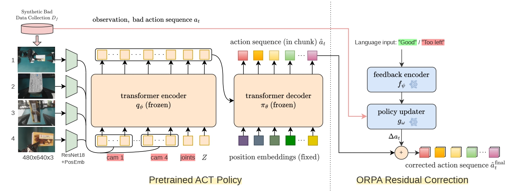

ORPA: Online Residual Policy Adaptation for Robot Manipulation Control with Human Feedback
* Equal contribution
Abstract
Robotic manipulation policies trained via imitation learning, such as Action Chunking with Transformers (ACT), can achieve strong performance under ideal conditions but often remain sensitive to small execution errors and distribution shifts. Correcting these failures typically requires dataset aggregation and full-policy retraining, which is computationally expensive and unsuitable for real-time deployment. In this work, we propose Online Residual Policy Adaptation (ORPA), a framework that enables immediate, feedback-driven correction of robot actions without modifying the underlying policy parameters. ORPA augments a pretrained control policy with a lightweight, feedback-conditioned module that predicts residual adjustments directly in joint space, allowing the system to adapt its behavior at runtime. We evaluate ORPA on a set of precision-sensitive manipulation tasks using the ALOHA platform, demonstrating improvements in success rate and recovery from small perturbations compared to baseline control policies and rule-based inverse kinematics corrections.
Why ORPA?
A strong manipulation policy does not always need to be retrained when it fails. Many failures arise from small local execution errors that only require a small corrective adjustment.
Method
ORPA keeps the pretrained ACT policy frozen and learns only the correction required for the current execution context. Human feedback is encoded and used to refine the action trajectory online.

ORPA augments the frozen ACT policy with a lightweight feedback-conditioned module. Given the current execution context and human feedback, it predicts a residual correction that refines the original ACT action without modifying the base policy.
Qualitative Results
These side-by-side videos show independent real-world rollouts of Baseline ACT and ACT + ORPA on snack box transfer and chip tube opening. In the30-trial evaluations, task-completion scores improved from 0.83 to 0.86 for transfer and from 0.79 to 0.82 for opening with ORPA trained using action and observation perturbations.
Real-World Demonstrations
Across the reported 30-trial evaluations, the action-and-observation ORPA variant achieved task-completion scores of 0.86 for snack box transfer and 0.82 for chip tube opening, compared with 0.83 and 0.79 for the original ACT baseline evaluated under normal conditions.
Real-World Task Scores
ACT → ORPA
ACT → ORPA
ACT → ORPA
Scores compare Original ACT with ORPA using action and observation perturbations.
Takeaway
🚀 As for future work, ORPA could be extended toward richer language feedback, contact-aware corrections, broader manipulation skills, and integration with predictive world models (such as DreamerV4), to enable more context-aware, anticipatory, and adaptive robot behavior.
BibTeX
@article{muttaqien2026orpa,
author = {Muhammad A. Muttaqien and Tomohiro Motoda and Ryo Hanai and Yukiyasu Domae},
title = {ORPA: Online Residual Policy Adaptation for Robot Manipulation Control with Human Feedback},
journal = {arXiv preprint arXiv:2608.17323},
year = {2026},
doi = {10.48550/arXiv.2608.17323}
}